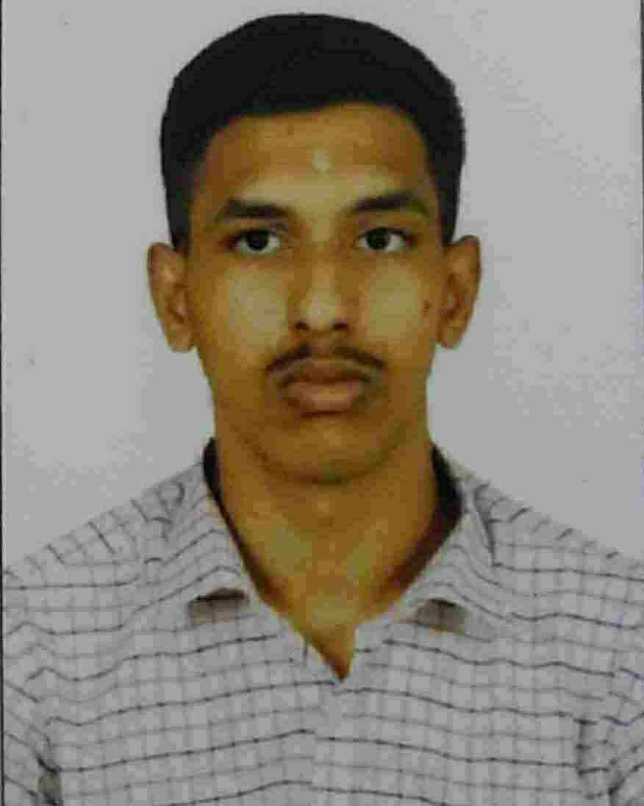

SANJAY.S

CAREER OBJECTIVE:
As a motivated and enthusiastic fresher, my career objective is to secure an entry-level position in a dynamic and progressive organization. I am eager to apply my academic knowledge, strong work ethic, and passion for learning to contribute positively to the growth and success of the organization.
QUALIFICATION:
- Panimalar engineering college 2020-2024 B.E-ECE CGPA:9.1185
- GRTMV Higer Secondary School HSC 2020 85.6%
- GRTMV Higer Secondary School SSLC 2020 94.4%
PROJECTS:
- SPYKA:A surveillance robot which provides support to users by sending
videos to users,built using esp32 cam for capturing pictures and videos and it is connected to device through
wifi and provides continuous monitoring by users
- VOICE ASSISTANT:This project developed using Python language,which involves
natural language processing and many inbuilt libraries and with that users can access
youtube,wikipedia,calender etc using voice voice commands
SKILLS:
- Python
- HTML5
- SQL
- C (basics)
LANGUAGES KNOWN
For further details:
My contacts